このページでは、HP主がコンパクトデジタルカメラなどで上手く撮れた写真、一眼レフを購入してから撮影した写真を紹介。学生ハーフ以降は一眼レフでの撮影。書いてある所属・学年は大会当時のもの。
主に紹介される項目は以下の通り。項目をクリックするとその項目のトップ写真まで飛ぶことができます。
写真の著作権は撮影者にあります。また、本サイトで公開している写真は、撮影が許可されている大会または撮影許可を得た大会にて撮影したものです。肖像権に関しては、スポーツ大会における肖像権の考え方を参照ください。映っている本人様とその関係者以外の無断利用・無断転載を禁じます。関係者以外の方の保存・利用申請は以下のフォームから。
写真保存・利用申請フォーム- 写真項目
10000m記録挑戦競技会（2022.11.20）
No. 1
.jpeg)
No. 2

No. 3
.jpeg)
第73回全国高校駅伝（2022.12.25）
No. 4

No. 5

No. 6

No. 7

第99回箱根駅伝復路（2023.1.3）
No. 8

No. 9

学生ハーフ2023（2023.3.12）
No. 10

No. 11

No. 12
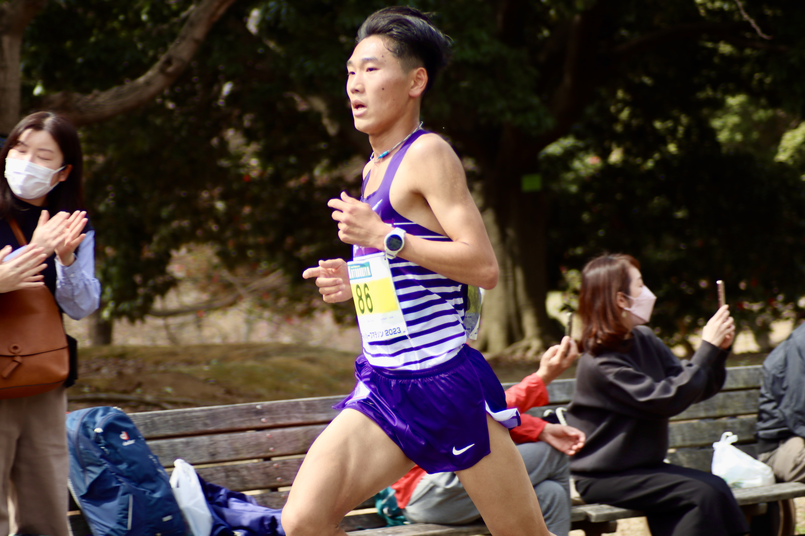No. 13

No. 14
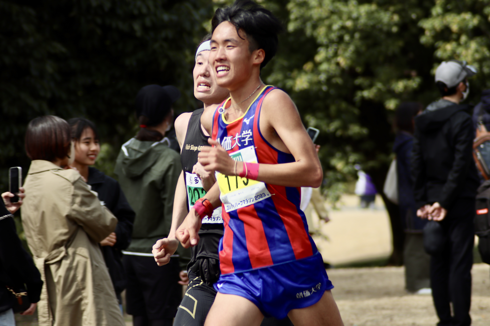No. 15
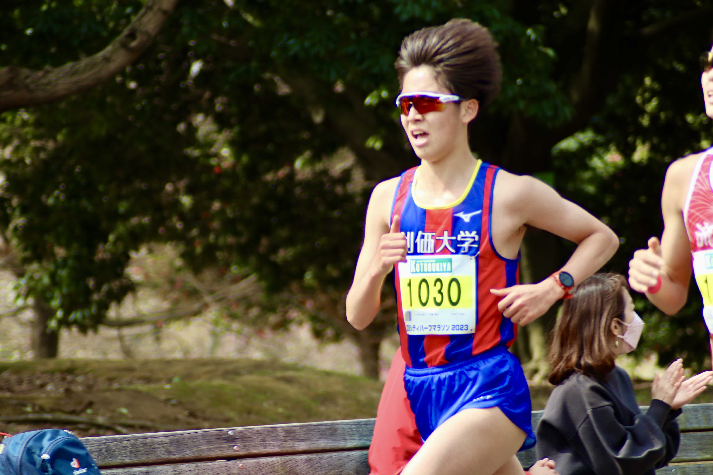第45回伊那駅伝（2023.3.19）
No. 16

No. 17

No. 18

No. 19

No. 20

No. 21

No. 22

No. 23

No. 24

第9回絆記録会（2323.4.9）
No. 25
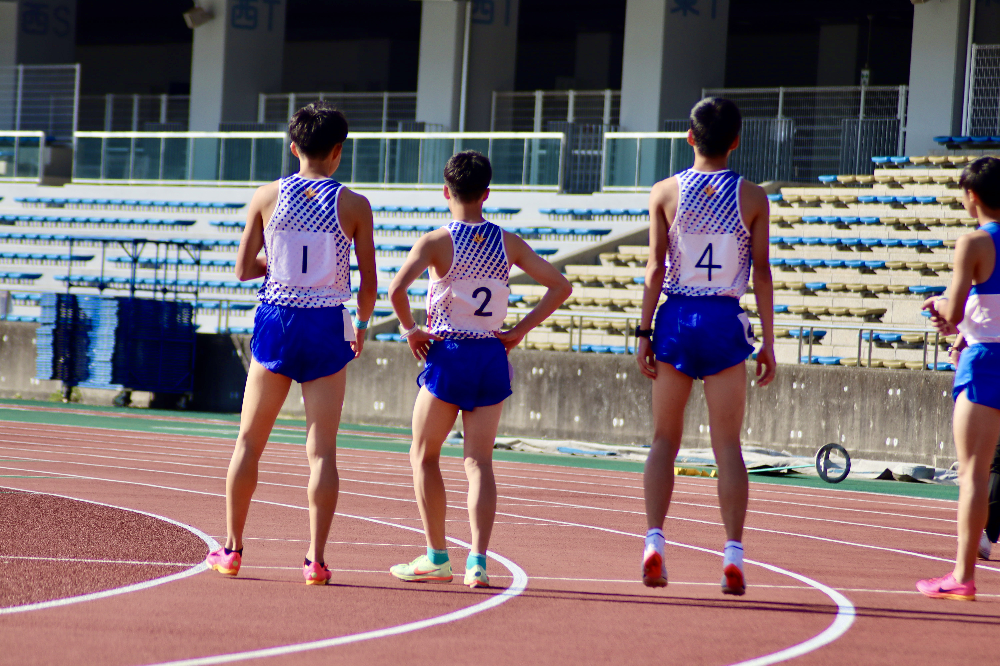No. 26
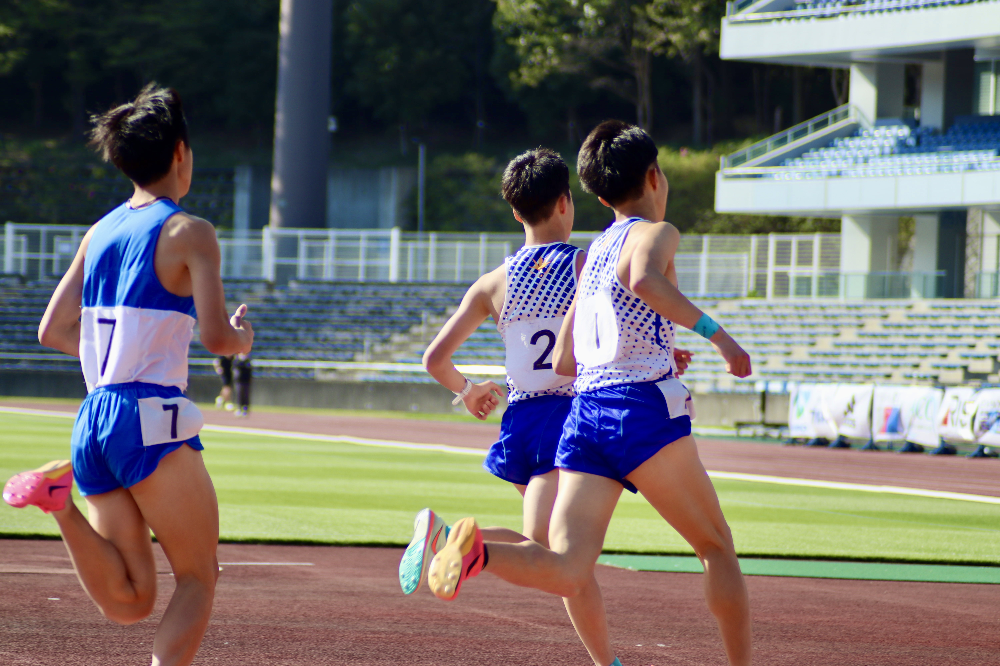No. 27
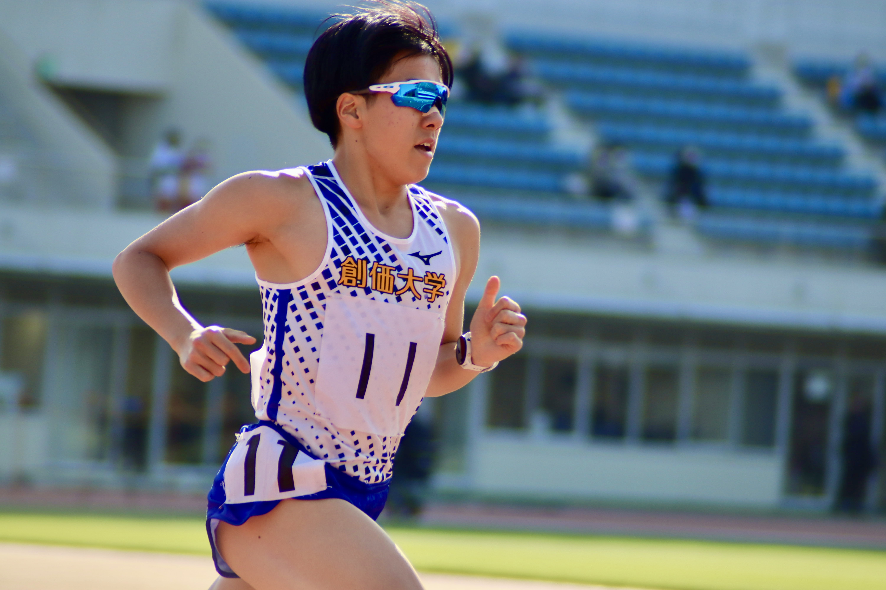No. 28
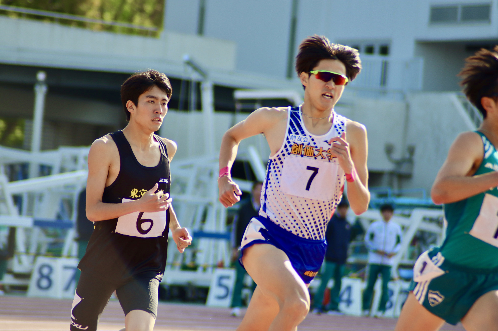No. 29
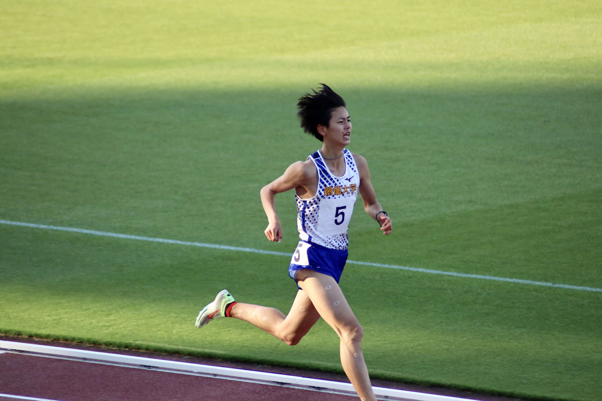No. 30
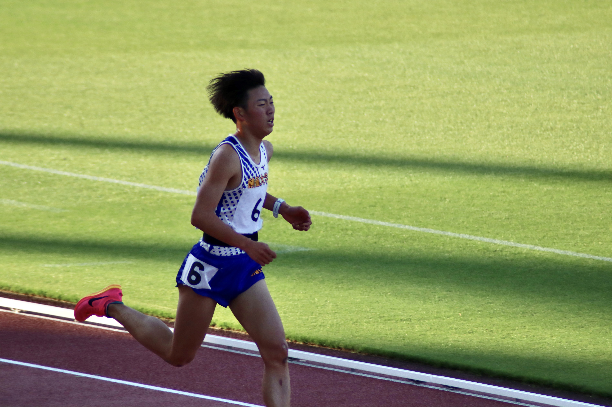No. 31

No. 32

No. 33

No. 34
第102回関東インカレ（2023.5.11～5.14）
＜1日目＞
No. 35

No. 36

No. 37

No. 38

No. 39

＜2日目＞
No. 40

No. 41

No. 42

＜3日目＞
No. 43
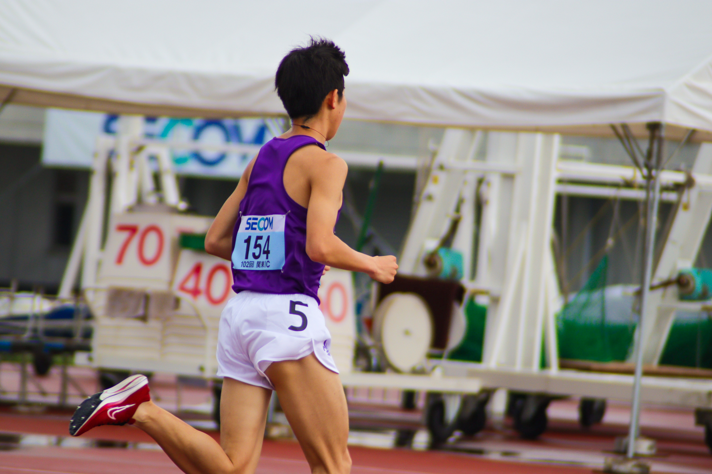＜4日目＞
No. 44

No. 45

No. 46

No. 47

No. 48

No. 49

No. 50
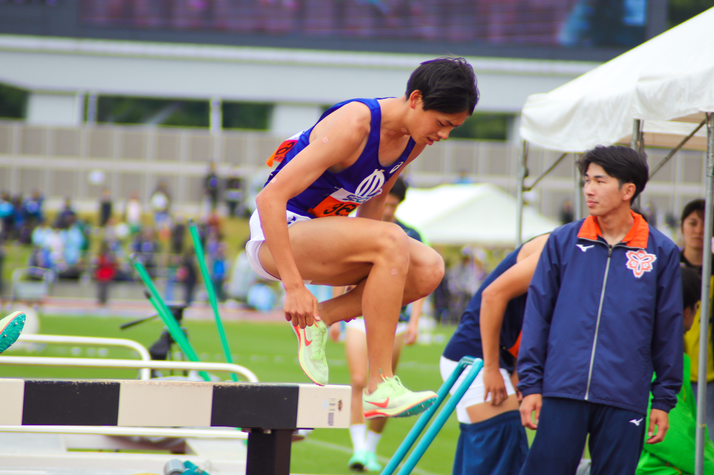No. 51

No. 52

No. 53
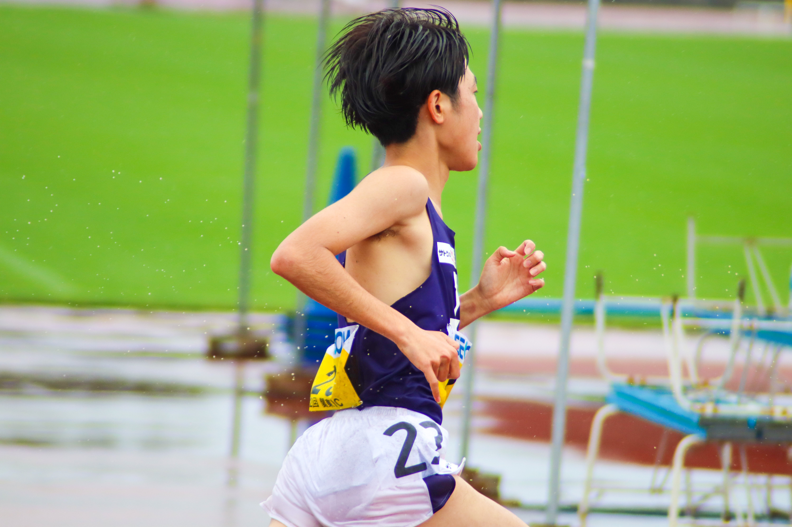No. 54
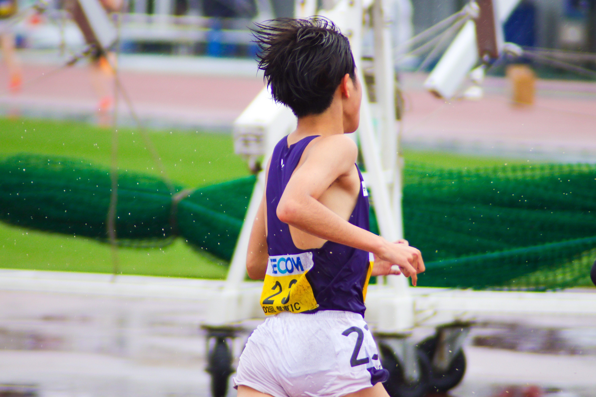No. 55

大阪府高校総体2023（2023.5.27～28）
No. 56

No. 57

No. 58

No. 59

No. 60

No. 61

No. 62

No. 63

No. 64

No. 65

No. 66

No. 67

No. 68

No. 69

No. 70

No. 71

No. 72